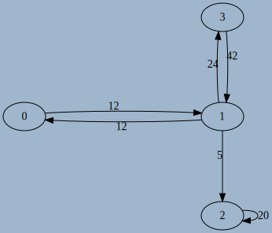

Modélisation de graphes en Python
Interface d'un graphe
Il existe de nombreuses manières d'implémenter un graphe, mais dans de nombreux cas l'interface recherchée est assez simple à concevoir. A ce titre l'utilisation d'une classe semble être judicieuse. Afin de définir l'interface choisie nous devons d'abord considérér les spécifications minimales de la création d'un graphe, orienté ou non, et éventuellement pondéré :
- Obtenir un graphe vide par une méthode constructeur
- Etre capable d'ajouter un noeud/sommet à un graphe existant.
- Etre capable d'ajouter des arêtes/arcs à un graphe existant, avec une éventuelle pondération.
- Obtenir la liste des voisins d'un sommet.
Une fois ces opérations élémentaires implémentées, nous pourrons rajouter des possibilités supplémentaires, comme par exemple
- obtenir l'ordre du graphe, sa taille ;
- obtenir donc le degré d'un sommet ;
- savoir si il existe un parcours eulérien ou un cycle eulérien dans ce graphe ;
- parcourir ce graphe en partant d'un sommet donné ;
- repérer les éventuels cycles du graphe ;
- appliquer un algorithme spécifique, comem celui de Dijkstra par exemple.
Pour commencer, nous allons donc définir une classe Graph, dont l'interface minimale sera la suivante (des ajustements seront possibles selon si le graphe est orienté ou non, pondéré ou non) :
| Méthode | Arguments | Valeur de retour | Description |
|---|---|---|---|
__init__ |
aucun ou ordre n du graphe |
aucune | Crée un graphe vide, d'ordre nb si nécessaire |
add_vertice |
aucun ou label du sommet |
aucune | Ajoute un sommet d'étiquette label si nécesaire |
add_edge |
s et e, p éventuellement |
aucune | Ajoute un arc allant de s à e, avec la pondération p si nécessaire |
exist_edge |
s et e |
booléen | Renvoie True si il existe un arc entre s et e |
get_neighbours |
s |
itérable | renvoie un itérable contenant les voisins de s |
Graphes non-orientés
Implémentation par une Matrice d'adjacence
Matrice d'adjacence
Une des possibilités pour représenter un graphe est d'utiliser ce qu'on appelle une matrice d'adjacence. Dans ce type de représentation, les sommets sont ordonnés, et considérés comme étiquetés par des entiers de \(0\) à \(n-1\), où \(n\) est l'ordre du graphe.
Dans cette représentation, le coefficient \(a_{i~j}\) de la matrice vaut :
- \(0\) si il n'existe pas d'arc entre les sommets \(i\) et \(j\) ;
- \(1\) ou la pondération \(p\) si il existe un arc entre les sommets \(i\) et \(j\).
Exemples
-
la matrice d'adjacence \(M = \begin{pmatrix} 0 & 1 & 0 & 1\\ 0 & 0 & 1 & 1\\ 0 & 1 & 1 & 0 \\ 0 & 0 & 1 & 0 \end{pmatrix}\) correspond au graphe suivant, avec les sommets dans l'ordre numérique

-
la matrice d'adjacence \(M = \begin{pmatrix} 0 & 1 & 1 \\ 1 & 0 & 1 \\ 1 & 1 & 0 \end{pmatrix}\) correspond au graphe suivant, avec les sommets dans l'ordre numérique

-
la matrice d'adjacence \(M = \begin{pmatrix} 0 & 10 & 0 & 0 \\ 0 & 0 & 20 & 0 \\ 40 & 0 & 0 & 30 \\ 5 & 0 & 0 & 0 \end{pmatrix}\) correspond au graphe suivant, avec les sommets dans l'ordre alphabétique

Associer Matrices d'adjacence et graphes
- Déterminer la matrice d'adjacence associée à ce graphe

- Déterminer la matrice d'adjacence associée à ce graphe

- Déterminer la matrice d'adjacence associée à ce graphe

- Déterminer la matrice d'adjacence associée à ce graphe 
- Tracer un graphe pouvant correspondre à la matrice \(\begin{pmatrix} 1 & 0 & 1 \\ 0 & 0 & 0 \\ 1 & 1 & 1 \\ \end{pmatrix}\) Est-ce un graphe orienté ou non-orienté ?
- Tracer un graphe pouvant correspondre à la matrice \(\begin{pmatrix} 1 & 0 & 1 & 1 & 1 \\ 0 & 0 & 1 & 0 & 1 \\ 1 & 1 & 1 & 0 & 1 \\ 1 & 0 & 0 & 0 & 1 \\ 1 & 1 & 1 & 1 & 0 \end{pmatrix}\). Est-ce un graphe orienté ou non-orienté ?
- Tracer un graphe pouvant correspondre à la matrice \(\begin{pmatrix} 1 & 2 & 3 \\ 10 & 20 & 30 \\ 100 & 200 & 300 \\ \end{pmatrix}\) Est-ce un graphe orienté ou non-orienté ?
- Quelle propriété semble posséder les matrices d'adjacence d'un graphe non-orienté ?
Implémentation en Python
Le code suivant permet d'implémenter en partie l'interface voulue d'un graphe avec une matrice d'adjacence :
class Graph :
def __init__(self, n=0) :
self.n = n
self.adj = [[0]*n for _ in range(n)]
def add_vertice(self) :
self.n +=1
for l in self.adj :
l.append(0)
self.adj.append([0]*(self.n))
def add_edge(self, s, e, p=1) :
self.adj[s][t] = p
- Compléter la méthode
exist_edgede la classeGraphpour qu'elle corresponde aux spécifications de l'interface. - Compléter la méthode
get_neighboursde la classeGraphpour qu'elle corresponde aux spécifications de l'interface. - Ajouter une méthode
get_orderà la classeGraphpour qu'elle renvoie l'ordre du graphe. - Ajouter une méthode
get_degreeà la classeGraphpour qu'elle renvoie le degré d'un sommet passé en argument. - Ajouter une méthode
is_directedà la classeGraphpour qu'elle renvoieTruesi le graphe est orienté etFalsesinon. - Ajouter une méthode
is_undirected_and_eulerianqui renvoie :Falsesi le graphe est non-orienté et qu'il n'existe pas de parcours eulérien du grapheTruesi le graphe est non-orienté et qu'il existe un cycle eulérien.- un tuple
(s,e)donnant les sommlets de départ et d'arrivée d'un éventuel chemin eulérien.
- Ajouter une méthode
delete_edgeà la classeGraphpour qu'elle supprime l'arc situé entre les sommetssetepassés en argument. - Ajouter une méthode DUNDERS
__repr__afin qu'elle renvoie la chaîne de caractère correspondant à la matrice d'adjacence (et donc directement utilisable par l'instructionprint(G)).
Limites du modèle
Si l'utilisation d'une matrice d'adjacence sous la forme présentée est très utile d'un point de vue mathématique (voir par exemple la propriété de l'itérée sur la page wikipedia), et très facile à mettre en oeuvre, elle possède néanmoins ceryaines limites :
- Elle utilise une place en mémoire proportionnelle à \(n^2\). Pour un graphe de 1000 sommets, il faudra plus d'un million d'entiers pour stocker cette matrice d'adjacence, ce qui commence à être considérable;
- Pour connaître les voisins d'un sommet, il faut parcourir la totalité de la lign,e correspondant à ce sommet, ce qui peut rapidement être trop long .
- Les sommets sont limités à des entiers, ou à un ordre défini, et il est difficile d'intégrer de nouveau sommets qui ne respecteraient pas la convention fixée.
Implémentation par un dictionnaire
Pour réduire la taille prise en mémoire par la matrice d'adjacence, il est possible d'utiliser un dictionnaire de voisinage. Ce dictionnaire apportera en plus la capacité d'avoir des chaînes des caractères comme identifiant des sommets.
Selon que le graphe soit pondéré ou non, on aura quelques différences dans l'implémentation.
Graphe non pondéré
Implémentation en Python
Le code suivant permet d'implémenter en partie l'interface voulue d'un graphe avec un dictionnaire de voisinage :
class Graph :
def __init__(self) :
self.adj = {}
def add_vertice(self,s) :
if s not in self.adj :
self.adj[s] = set() # crée un objet set vide, et graranti l'unicité de chaque élément
def add_edge(self, s, e) :
self.add_vertice(s)
self.add_vertice(e)
self.adj[s].add(e) # La méthode add des objets de type set fonctionne comme append
- Compléter la méthode
exist_edgede la classeGraphpour qu'elle corresponde aux spécifications de l'interface. - Compléter la méthode
get_neighboursde la classeGraphpour qu'elle corresponde aux spécifications de l'interface. - Ajouter une méthode
get_orderà la classeGraphpour qu'elle renvoie l'ordre du graphe. - Ajouter une méthode
get_degreeà la classeGraphpour qu'elle renvoie le degré d'un sommet passé en argument. - Ajouter une méthode
is_directedà la classeGraphpour qu'elle renvoieTruesi le graphe est orienté etFalsesinon. - Ajouter une méthode
is_undirected_and_eulerianqui renvoie :Falsesi le graphe est non-orienté et qu'il n'existe pas de parcours eulérien du grapheTruesi le graphe est non-orienté et qu'il existe un cycle eulérien.- un tuple
(s,e)donnant les sommlets de départ et d'arrivée d'un éventuel chemin eulérien.
- Ajouter une méthode
delete_edgeà la classeGraphpour qu'elle supprime l'arc situé entre les sommetssetepassés en argument. - Ajouter une méthode DUNDERS
__repr__afin qu'elle renvoie la chaîne de caractère correspondant à la matrice d'adjacence (et donc directement utilisable par l'instructionprint(G)).
Graphes pondérés
Il existe pluseiurs méthodes permettant d'ajouter une pondération sur chaque arc :
- on peut ajouter dans le dictionnaire de voisinage un tuple contenant à la fois le nom et le poids de l'arc considéré ;
- on peut aussi ajouter un autre dictionnaire parallèle à
self.adjdont les clés sont les couples de sommets et les valeurs le poids de l'arc considéré.
Implémentation en Python avec un tuple
Le code suivant permet d'implémenter en partie l'interface voulue d'un graphe avec un dictionnaire de voisinage et une pondération :
class Graph :
def __init__(self) :
self.adj = {}
def add_vertice(self,s) :
if s not in self.adj :
self.adj[s] = set() # crée un objet set vide, et graranti l'unicité de chaque élément
def add_edge(self, s, e, p=1) :
self.add_vertice(s)
self.add_vertice(e)
self.adj[s].add((e,p)) # La méthode add des objets de type set
Quels sont les changements à apporter aux autres méthodes par rapport à la situation sans pondération ?
Implémentation en Python avec un dictionnaire d'arcs
Le code suivant permet d'implémenter en partie l'interface voulue d'un graphe avec un dictionnaire de voisinage et une pondération :
class Graph :
def __init__(self) :
self.adj = {}
self.edges= {}
def add_vertice(self,s) :
if s not in self.adj :
self.adj[s] = set()
def add_edge(self, s, e, p=1) :
self.add_vertice(s)
self.add_vertice(e)
self.adj[s].add(e)
self.edges[(s,e)]=p
Quels sont les changements à apporter aux autres méthodes par rapport à la situation précédente ?